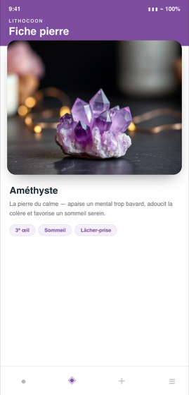

Lithocoon
LithothérapieUn guide de lithothérapie complet : chaque pierre avec ses propriétés, ses associations et ses précautions. Composez des bracelets sur mesure, suivez la lune et purifiez vos pierres au bon moment.
Gratuitement
- 56 pierres détaillées
- L'oracle des pierres
- L'assistant de recherche
Avec la version complète
- Les 140 pierres, dont la Collection Prestige
- Créer et enregistrer vos bracelets
- Journal de ressentis et courbe d'évolution
- Calendrier lunaire et rituels de purification